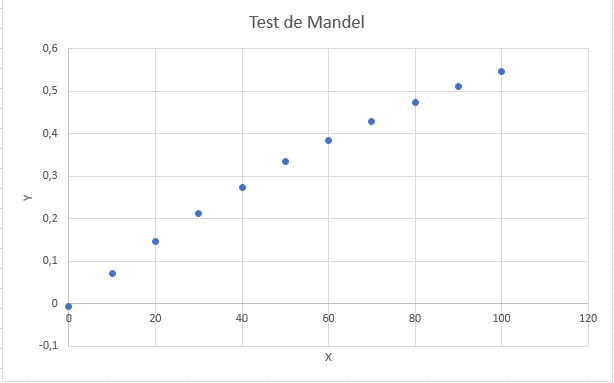
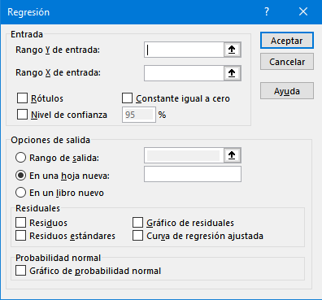
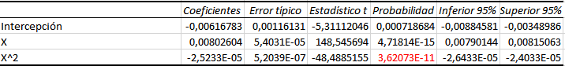

Test de Mandel en Excel
- En primer lugar necesitaremos, obviamente, los datos de calibración. Estos se muestran en Excel en la siguiente figura:
La gráfica de esta calibración se presenta a continuación. Note la evidente no linealidad a alta concentración.

Bien, como Ud.recordará del post sobre linealidad, para aplicar el test de Mandel debemos ajustar dos modelos: un modelo lineal y otro no lineal. Mencionamos que para darle sentido químico-analítico ajustamos un modelo “no lineal” cuadrático. Yo sé que la tentación es grande para aplicar el botón derecho y
Ajustar línea de tendencia, pero mantengamos la calma. Lo haremos de otra forma.Para ajustar un modelo cuadrático en Excel hay varias formas, pero en este post utilizaremos las herramientas del menú
Análisis de datos:
- Como ajustaremos un modelo cuadrático, necesitamos incorporar la
variable \(X^2\). Esto es muy sencillo, debemos ubicarnos
en la columna B (donde está la \(Y\)), presionar botón derecho y seleccionar
Insertar, lo cual generará una columna vacía entre \(X\) e \(Y\) tal como se muestra en la siguiente figura:
 A esta nueva columna la llamaremos
A esta nueva columna la llamaremos X^2, y generaremos los valores
correspondientes en la celda B2con la fórmula =A2^2:

Copiamos la fórmula hasta la celda B12:

- Ahora ajustaremos el modelo cuadrático. Seleccionemos el menú
Datosde la cinta de herramientas, el cual mostrará a la derecha el menúAnálisis de datos, hacemos clic y se abrirá el siguiente cuadro:

Seleccionamos la opción Regresión, con lo que se abrirá el siguiente
diálogo:

En Rango Y de entrada presionamos la flecha negra que apunta hacia arriba
y seleccionamos con el mouse los datos de \(Y\), incluyendo la letra \(Y\),
luego presionamos la flecha que apunta hacia abajo:

En Rango X de entrada presionamos la flecha negra que apunta hacia arriba
y seleccionamos con el mouse las dos columnas: \(X\) y \(X^2\),
incluyendo las etiquetas, luego presionamos la flecha que apunta hacia abajo:

Chequeamos los cuadritos Rótulosy Nivel de confianza.
{{% callout warning %}}
Jamás chequee el cuadrito Constante igual a cero, a menos que haya
demostrado previamente esta hipótesis{{% /callout %}}
En Opciones de salida seleccionamos en Rango de salida la celda
E1 (en realidad da igual, es para que tengamos la misma salida).
 ¡Listo! Por ahora no usaremos las otras opciones.
¡Listo! Por ahora no usaremos las otras opciones.
- Presiones
Aceptary aparecerá el análisis estadístico a partir de la celdaE1:

- No nos detendremos a explicar toda la información estadística de
las tablas, iremos
directamente al grano: al test de linealidad de Mandel. Ubique en la tabla
inferior la fila de la variable
X^2y la columna respectiva denominadaProbabilidad. En este ejemplo marqué con rojo la celda del test de Mandel:
 8. Esta celda representa el p-value del test de Mandel. En este ejemplo el p-value = \(3,6\times 10^{-11}\), es decir, bajo la interpretación tradicional de las pruebas de hipótesis, ya que p-value \(< 0,05\) concluiríamos que el modelo lineal no es adecuado o razonable para modelar los datos de calibración.
Bueno, queridos lectores espero les haya gustado. Como siempre, pueden dejar sus comentarios/críticas y sugerencias aquí abajo. Hasta la próxima.